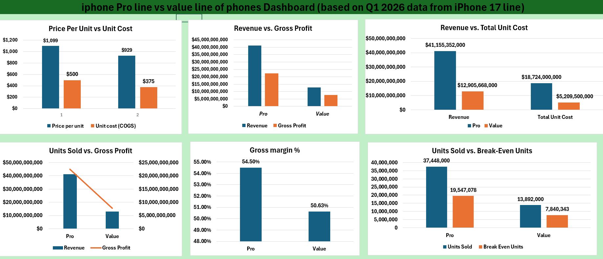
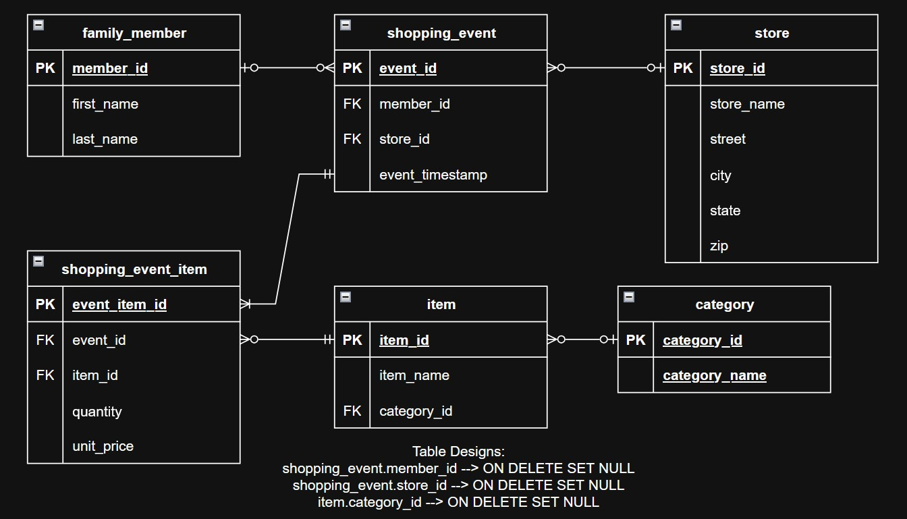
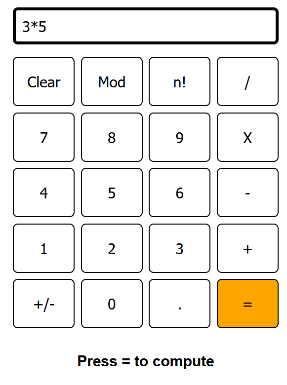

Data Science student at North Dakota State University
BUSN 380 Final Project

For this project, I chose a company and a business question to answer using the analytics toolkit from the course. Using Apple as a case study, I compared the iPhone Pro line against the base models and carried out an end-to-end analysis covering all four types of analytics. I used regression analysis to estimate price elasticity and forecast demand, calculated customer lifetime value (CLV), and ran break-even and sensitivity analysis. I then used optimization to find the best pricing strategy and compared candidate markets with a scorecard and Hofstede cultural scores. Market simulations stress-tested the final recommendation. Result: the two product lines performed distinctly differently, and my analysis concluded that Apple's current strategy is effective but should prioritize specific regional markets for the best outcome.
Tools: Power BI, Tableau, Excel
Methods: Pricing & elasticity, demand forecasting, regression, CLV, break-even & sensitivity analysis, optimization, market simulation, market scorecards, Hofstede dimensions
CSCI 366 Final Project

As part of a team of 3 people, I designed and built a family shopping tracker with a relational PostgreSQL database and a Java application. The schema has at least five tables in 3NF with one-to-many and many-to-many relationships, a view, and an index. The Java app connects directly to the database using parameterized SQL statements, with no framework generating queries. Users can record shopping trips, manage stores and categories, and run reports such as daily purchases per family member, spending by store, top spending category, and the most expensive item in a month. MY role in this project was to design methods on the java portion of the application to handle more specialized and specific report calling methods to get data pertaining to specific time spans, people, shopping lists, products, stores, and other identifiers.
Tools: Java, NetBeans, PostgreSQL, pgAdmin, SQL
Concepts: Database design, ERD modeling, 3NF, joins and aggregate queries, views and indexes, prepared statements, CRUD operations
CSCI 159 Final Project

Built a working calculator from scratch for the course's final project, bringing together the skills from the whole semester. It runs in the browser and supports basic arithmetic along with modulo, factorials, sign toggling, and decimals. HTML provides the structure, CSS handles the layout and styling, and JavaScript handles the button input and calculations.
Tools: HTML, CSS, JavaScript